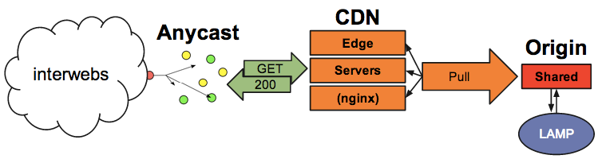

BootstrapCDN.title
"a love story" |
BootstrapCDN.whois
Justin Dorfman
| Joshua Mervine
|
BootstrapCDN.history
|
BootstrapCDN.metrics
BootstrapCDN.metrics.sites 48,019
BootstrapCDN.metrics.requests.per
{ day : '81 million',
second : '1 thousand' }BootstrapCDN.metrics.bandwidth.per
{ day : '1.3 TB',
second : '15 MB' }BootstrapCDN.plot.load('analytics.dat')BootstrapCDN.stack({ version: 1 }) |
BootstrapCDN.stack({ version: 2 })BootstrapCDN.stack({ version: 2 }).whyNodeBootstrapCDN.stack({ version: 2 }).whyNodeKnow what you're supporting. |
BootstrapCDN.stack({ version: 2 }).host[ Digital Ocean Slide ] |
BootstrapCDN.stack({ version: 2 }).init| $ git clone https://github.com/MaxCDN/bootstrap-cdn.git $ cd bootstrap-cdn $ make setup $ make run |
BootstrapCDN.stack({ version: 2 }).update| $ git pull $ make restart |
Questions.forEach(function(q) {
return (JDorfman.a(q) || JMervine.a(q))
});
/****************************************
* Too far? I hoped so. =P
***************************************/"We're Hiring"
MaxCDNjdorfman@maxcdn.com | YP.comjmervine@yp.com |
 | These Slidesjmervine.github.io/lado_slides |